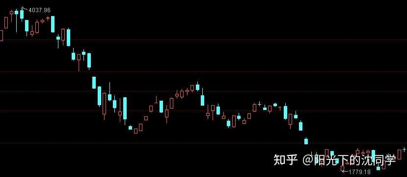
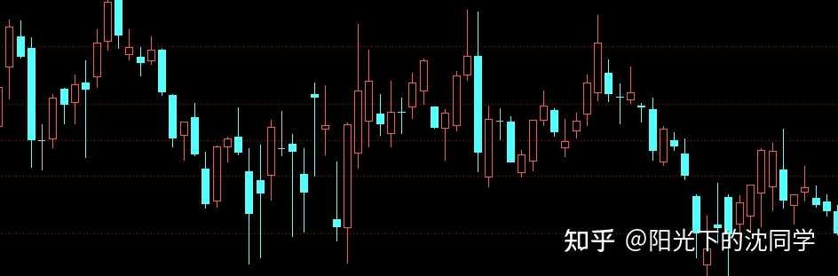
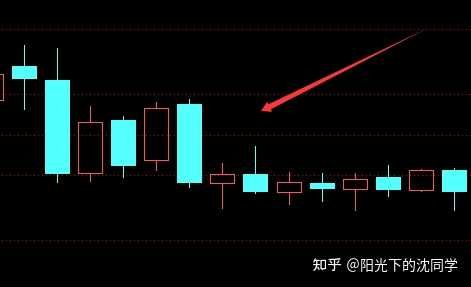
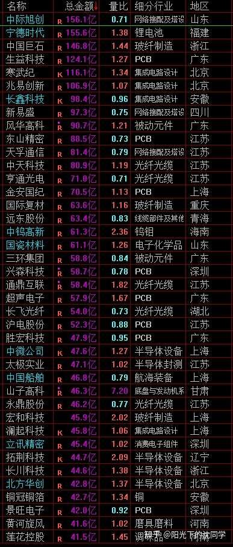
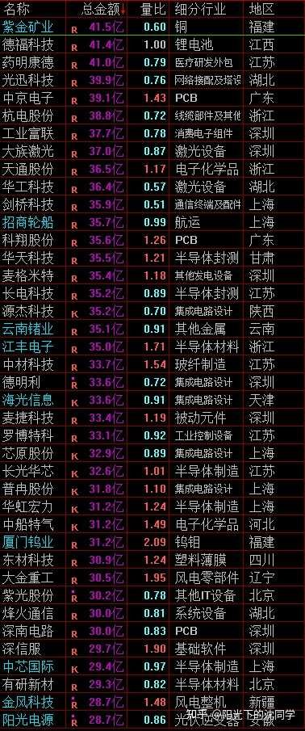
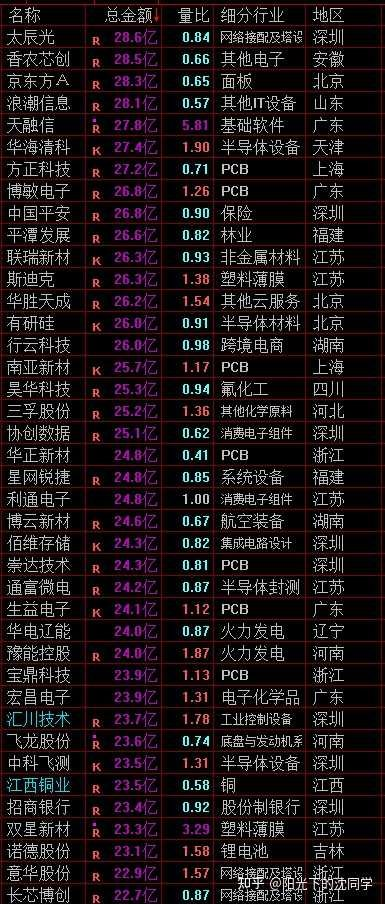

本文的核心逻辑在于揭示‘熊市抗跌股’的资金博弈本质：抗跌并非因为公司基本面有多么神奇，而是因为其‘筹码结构’处于低位。当市场处于熊市，主力资金撤退导致高位获利盘崩塌，而低位品种因前期未参与炒作，没有获利盘抛压，且估值处于周期底部，主力没有撤退空间，从而表现出抗跌性。作者强调投资是资金寻找容器的过程，熊市的核心策略是‘控制仓位+分散配置+低位潜伏’，通过牺牲短期流动性换取穿越周期的生存能力。
今天专门聊聊熊市里面下跌幅度比较小，很抗跌的股票，都有哪些特征，做一个科普
昨天是聊了比较容易大跌的股票，今天聊聊比较抗跌的，这样也更完整一点
行情不太好的时候多分享一些投资心得，把各种基本功打扎实，以后都用的上
熊市抗跌的股票最大的原因是提前跌了，一般都是这样
每次熊市还在活跃的股票都是没有怎么享受牛市上涨的，本来就在低位，没有获利盘注【本质逻辑】指持仓成本远低于当前市价的筹码。获利盘越多，一旦市场风吹草动，抛压就越重，因为持有人急于兑现利润。【新手提示】买入前先看股价位置，若股价处于历史高位，意味着获利盘堆积，下跌时极易引发踩踏。，所以才能熊市不大跌
熊市是什么？
熊市就是获利了结，主力撤退
那本来主力就没有怎么赚钱，也就没有多少撤退空间
历史上行情的轮动都是科技成长火几年然后接着白马蓝筹火几年，这样轮着来，不同风格的主力轮流赚钱
本质上都是把低位的东西推起来，高位再出货，这个就是周期
想熊市少亏钱，持仓相对稳定，那么这个股票就不能有泡沫，估值要低位，股价位置要在低位，没有获利盘，周期在低位，主力没有大幅撤退的空间，这个是最最关键的
15年股灾的时候指数是这样跌的

展示了指数在熊市中的趋势性下跌。视觉上呈现出高点不断下移的特征，反映了市场情绪的极度悲观与主力资金的持续流出，警示新手在下降趋势中切勿盲目抄底。
那时候很多白马蓝筹的k线走势是下面这样的，非常稳健，维持一个震荡，熬过熊市
但其他高位的垃圾股就是天天大跌，比指数跌的还惨
那为什么白马蓝筹股可以在15年股灾行情里面跌幅没有那么大？
因为他们也没有怎么享受到15年疯狂的牛市
这个是公平的，盈亏同源注【本质逻辑】市场规律的公平性体现。你在牛市中享受了高风险带来的高收益，在熊市中就必须承担高估值回撤的代价。【新手提示】不要试图在牛市中追求所有热门股，也不要在熊市中抱怨优质股不涨，这是市场周期的必然。

15年以后，16-18年就是波澜壮阔的白马蓝筹牛市，很多好公司持续震荡上涨好几年，股价涨了好几倍
但之前15年活跃的品种依旧表现不太行，休息了好几年
这个就是周期
15年牛市没有参与的品种，熊市也跌的少
后面白马蓝筹股的3年慢牛行情，之前大涨的股票也没办法继续参与
都有一个周期在
所以只要是大涨过的股票，不要心存幻想，里面有巨大获利盘，就是麻烦的
低位的优质企业，获利盘清洗干净，未来自然有行情，即使是的遇见熊市，控制好仓位，熊市里面虽然也会下跌，但肯定比大部分高位股票跌幅少
我做过很多统计
熊市里面低估值+低位品种平均跌幅15%-25%，远比指数跌幅20%-40%，其他高位个股平均跌幅50%-80%要小的多
完全不跌也难，就是相对来说比较抗跌，满仓的跌15%-25%也难受，但如果仓位比较低，还可以加仓，就容易熬过去
熊市，但凡可以熬过去，不亏太离谱，牛市都可以翻身
熊市摧毁的是加杠杆的，借钱的，满仓的，追高的，底部再割肉的
反过来说，你仓位控制不错，持仓低位，低估值，你是可以熬的过来的，最多是熊市几年赚不到钱，不至于被熊市摧毁
低位品种我们继续聊，就像下图
季线8根以上调整k线，然后不再新低，这种开始震荡底部徘徊，只要业绩不崩，熊市也不会跌的太离谱，这种就是有见底可能性的

通过季线调整后的震荡区间，暗示了‘底部扎实’的心理预期。当股价不再创新低且成交量萎缩，说明抛压已尽，是主力资金开始吸筹的潜在信号。
调整周期到位了，没有什么获利盘，业绩没有继续下降，股息没有减少，这种股价不会偏离太多的，尤其是行业龙头股
行业龙头股的估值下降都伴随着业绩下滑，分红减少，这两个核心指标没有减少，那么季线调整到位以后，底部是很扎实的
下一轮牛市的核心品种其实就是这一轮牛市没有怎么获利盘的低位白马蓝筹股，红利这些企业
包括很多优质的低位科技，高端制造，出海龙头，他们这一轮但凡表现不太好的企业，未来下一轮就会被主力看上，作为新的牛市发动机，行情的抱团品种
以前我也总是想不明白，为什么有些股票可以上涨，为什么在这个时候上涨，为什么有些股票不涨
在我经历的行情多了就发现了，其实都是资金面在主导
有资金在玩，资金可以买到廉价筹码，有炒作空间，就会上涨，就算估值看起来没有那么便宜，基本面没有那么好，但熊市过去了就是过去了，该炒作还是会炒作
本质上还是资金在寻找资金的容器注【本质逻辑】股票本质上是主力资金博弈的载体。主力炒作不一定看重基本面，而是看重筹码是否廉价、是否有足够的空间进行拉升。【新手提示】不要迷信所谓的‘价值投资’故事，若股价已在高位，任何利好都可能是主力出货的诱饵。，所以位置高了是最大的麻烦，因为里面有获利盘了，这个比其他的都麻烦
一共就是这些方向，来来回回炒作，也没有绝对的好坏，便宜的，低位的，就赚钱空间大，其他很多都是讲故事，需要一些理由罢了，一旦炒作起来了，市场都会认可
如果不能理解到资金面的这些运作逻辑，那么真的很难理解盘面变化，因为如果要单纯用基本面去阅读盘面，那大部分股票都不可能有行情，因为都算不上有价值的企业，所以本质上资金面才是行情的核心，站在资金面角度看问题才能看懂市场和盘面
大家可以多看几遍今天的内容，然后收藏起来和你自己的持仓做对比，手里有高位的，比较贵的持仓，要尽早优化，不然熊市下跌空间巨大，止损越慢越被动
每天原创不易，读者朋友千万不要忘记点赞支持一下
正所谓先赞后看，腰缠万贯
大家可以先点一波赞，我们再继续慢慢聊
祝点赞的朋友福寿无量，天天开心
行情在没有新的变化之前，其实可以聊的点不会很多，就是偶尔跌多了反弹一些，后面继续下跌
除非有非常大利好，可以让赚钱效应扭转，把下跌趋势反转，不然每次反弹都是卖出机会
成交量越来越小，越来越难做，现金流一定是最重要的
在这样不太好交易的行情下，还不如每天聊聊投资心得，复盘复盘行情，让大家多学的知识
之前积压的一直没有发出来的AI手机对职业投资者的调研帮助测评，包括关于投资者心理学深度剖析文章，最近也基本上都编辑好了，后面有机会都发出来分享给大家
熊市多学习，多筛选自选股，打好基地是真的很重要，不然下一轮牛市一样赚不到钱，投资是知识和认知，能力圈的变现，你不去成长和提升，总是想轻松的追涨杀跌赚钱，这个是白日做梦
行情不太好的时候反而是深度学习的时间
最适合新手投资者，上班族，股龄10年内投资者的投资策略分享
美股依旧没有定投机会
黄金只要不突然大涨，都可以每周定投
红利分化严重，要看清楚标的，选择低位红利配置
债券值得配置，熊市最稳定的闲钱配置方向
熊市赚钱其实机会不多
要不就是每次大跌买一波，上涨卖掉，然后等下一次大跌
然后就是通过分散配置各种不同的资产来赚钱，比如说A股熊了，还有黄金，美股，债券，红利这些，这些品种有时候周期不重叠，如果你都是A股，自然会出现一整轮熊市很煎熬的情况，但如果你分散配置在各种优质资产上面，就不会这样
分散配置全球优质资产，才能穿越牛市，长期稳定复利
经常有朋友咨询仓位优化的问题，其实每次聊最大的两个问题都是止损做的不果断，被深套也会被动，然后就是持仓急着在A股的问题
没有去合理分散配置其他资产，这样就账户波动很大，这么多的优质的红利ETF，肯定要有底仓的，黄金，美股，债券都需要有一部分
不然行情差的时候账户是非常难看的
投资本质上是一个理性，常识的游戏
在我看来，分散投资，控制仓位就是常识，风险这么大游戏，你怎么可能孤注一掷在某一个资产或者某一个市场上面？
投资按照常识去做，多一点耐心，没有那么难
难就难在大部分投资者没有耐心，且很容易冲动上头，在各行各业混的挺好的精英，平时也不是毛毛躁躁的人，但到了资本市场都变的没办法控制自己，这个也是很神奇的事情
很多投资者在自己的行业是非常不错的，家庭也打拼累计的非常巨大的财富，现金流充沛，其实都肯定是聪明人，能力很强的人，但依旧很难控制好仓位，投资方面依旧很喜欢追涨杀跌，喜欢买一些自己不懂的股票，也不止损，而且容易集中单一品种去博弈
这个就说明，投资需要运用的是更加底仓的逻辑，人的底色是差不多的，人性就是这样，不管你什么身份，本质上我们都是人，差别没有那么大，在其他行业我们的身份，财富这些导致好像人与人差距非常大，实际上来到了资本市场，人性差距极小，都是属于一不小心就可能亏大钱的存在，大家都可能上头，人性都难控制
你有了驾驭情绪，克制本性的能力，投资就是信手拈来，因为任何好东西都会跌下来，只不过你有没有耐心等到，大部分人是不可能等得到的，最多等几天就去买其他热点了
你能等，那投资这碗饭就是你吃的，投资最终还是赚人性的钱，很多技巧最终还是赢不了买的便宜
那为什么人家可以买的便宜，人家为什么熬到最后股价很便宜的时候，手里还有钱加仓，这个就是差距
学会各种基本功是基础，不代表你可以真的用的出来，时时刻刻都在满仓就肯定没有多少机会去施展你的投资技术
市场给到你机会，把各种资产的价格打下来，才是给到你表演的舞台，这个时候你还有没有钱买入，其实就是有没有登台的资格
每一轮熊市最残酷的还是看着越来越多好公司跌到捡钱的价格，但有能力去买的投资者越来越少，在最开始开始下跌的时候就早早满仓，都在抄底的过程中套牢了
大家现在仓位控制好，千万不要掉以轻心，因为下跌趋势才刚刚开始，仓位控制好要贯彻到底，需要熬很久，你现在仓位控制好，后面又一口气满仓了，一样是不行的，需要真的熬到指数跌透，市场成交量见底，才会有新的行情，这个过程很曲折，很漫长
熊市才是最考究投资者水平的周期，看谁风险控制的好，谁才有资格享受下一轮牛市的果实
现在肯定要有熊市思维，不然交易都可能过于冲动，和当下市场不够匹配
希望大家都可以带着熊市思维去优化持仓

大家有任何投资疑问，有什么想交流的都可以付费咨询，想单纯支持一下也可以
【在知乎上我的主页咨询即可，没有任何群，不搞私下小圈子】
家庭资产长期稳健配置方案分享，仓位优化，估值分析，行业分析，心态调整，各种投资学习技巧都可以咨询
大家的支持和尊重是我创作的最大动力
感恩大家每天的付费咨询和打赏，感谢大家对知识的尊重，感谢大家对我的支持
欢迎提问
适合职业投资者，10年以上经验老股民，基本功极其扎实投资者的实战分享
继续聊实战
3950-3650区间的下跌肯定有买点的，只不过行情不太好，加仓不能太快
加息是一个周期，是漫长的影响，不是短期的，就像下跌趋势一样，已经开始的下跌趋势也不会是一下子结束的
所以现在就是要先定调下跌趋势已经形成
加息只不过是下跌趋势中的一个利空，会加速一点下跌节奏，但不会改变趋势
市场因为加息影响下跌，已经跌下来，我认为可以对于低位科技，白马蓝筹，一些低估值，低位好公司做一些博弈是没有问题的
远离高位，泡沫大的抱团股即可
每次杀跌可以慢慢加仓，最起码我自己会这样来做
如果市场因为加息影响短期跌幅比较大，我会继续加仓，继续做一些开仓动作来买看好的企业，指数大跌的时候买一点点，不担心，后面不会一直大跌，是高点越来越低，跌了一样有反弹，选股没有大问题的话，是有差价和波段可以做的
关键是要上涨t出来注【本质逻辑】指在反弹过程中卖出部分持仓，降低成本。在熊市中，这是一种通过波段操作降低持仓风险的手段。【新手提示】新手若无法精准判断反弹高点，切忌频繁操作，否则容易卖飞或在震荡中不断加仓导致被套。，不然后面跌下来就麻烦，如果你没办法获利了结，上涨你舍不得卖，买错了也舍不得止损，那你最好的选择就是低仓位+债券，然后一直休息，等熊市结束再说
不能又想下跌抄底，博弈一下，但又不做好止损，赚钱了也不获利了结，这样仓位起来了，后面风险反而比较大
现在这种行情，适合短线做的比较流畅果断的投资者，新手投资者也可以作为练手，小仓位试一试，可以锻炼一下自己止损和获利了结能力
抓住杀跌机会少了加仓是我自己目前的一个实战策略，看好低位优质企业，主要还是低位科技，高端制造，白马蓝筹这些
港股作为长线持仓跌多了也会加，12月之前波动会比较大，有继续杀跌再继续加
保持熊市谨慎思维，加仓一定要慢即可，情况不对的持仓早一点指数，把仓位优化到最好，不留那种泡沫大的高位股在手里
业绩下滑的，走势太难看的也都可以先出来
熊市里面大部分股票必然是很容易更便宜买回来的，不需要那么担心买不回来，现金才是最重要的东西

通过量比数据揭示资金活跃度。量比过大可能意味着主力在剧烈震荡中吸筹或出货，新手应关注量比平稳且处于低位的优质龙头，避免参与高波动率的博弈。


风险提示：股市有风险，入市须谨慎
今天是坚持写复盘笔记的第1523天【每日打卡】
下面是我自己多年来的一些重要的心得感悟，分享给大家，会不定期增加内容
1，
长期投资成功的关键是稳定的情绪和沉稳的性格，这些比过人的天赋更重要
2，
最终我们穷其一生获得的一切经验、知识和所有财富都需要转化为自身的品德修养，不然获得越多失去越多
自身的修养是留住各种财富最好的容器，富裕一时不难，富裕一生不易
珍惜获得的一切，保持初心、慈善、知足，让自己的德行和财富共同成长，才能方得始终
3，
古之成大事者，不惟有超世之才，亦必有坚忍不拔之志
想成为优秀的投资者一定要持之以恒，不断学习，反思，总结，在投资中获得的各种经验最终都会成为你财务自由的砖瓦
4，
再高的智商也一样会被情绪一瞬间冲垮
大部分的亏损都来源于投资者的冲动和情绪化交易，学会控制自己的情绪和心态才能长期稳定的复利
5，
富在术数，不在劳身
一定要多思考，任何时候想清楚了再交易，漫无目的的交易，只会多做多错
6，
利在势居，不在力耕
投资赚钱主要靠把握时机，没有机会就休息，多留现金
做可以让自己心安的投资，便是对于你来说最好的盈利模式
7，
谨记：贪念起，万念俱灰！
控制住了风险，利润会随之而来
富贵险中求，也在险中丢
求时十之一，丢时十之九
美，港，A股长线+短线所有股票持仓投资方向配置比例参考：
金融：10%
消费：31%
生物医药：13%
AI产业链：7%
能源，动力：9%
高端制造：25%
周期：5%
【每3-6个月更新一次】
最新更新时间2026年9月
祝大家在如梦如幻的行情里清醒而自由
仓位情况【不推荐模仿】
短线博弈仓位：5%
长线+短线总仓位尽可能低于55%，这样更符合当前行情的风险程度
长线资产配置目前个人分散持有：各种债券ETF+各种核心红利ETF+美股ETF+黄金+优质REITS+长期看好的优质企业+核心ETF
全文逻辑总结：熊市生存法则的核心是‘去泡沫’与‘降杠杆’。作者认为，熊市下跌是市场对前期过度炒作的修正，投资者应将仓位控制在低位，通过分散配置（债券、红利、黄金）来对冲单一市场的风险。新手避坑指南：1. 严禁满仓抄底，熊市下跌往往是漫长的过程；2. 远离高位抱团股，因为获利盘抛压是最大的杀手；3. 熊市是基本功修炼期，不要试图通过追涨杀跌赚快钱，现金流管理才是穿越周期的唯一底牌。


{kind=link}
{kind=link}
每日笔记
1、 美股依旧没有定投机会
2、 黄金只要不突然大涨，都可以每周定投
3、 债券值得配置，熊市最稳定的闲钱配置方向
4、 红利分化严重，要看清楚标的，选择低位红利配置
行情不好就好好学习干货。
继续苟。
每日学习功课，每日看老沈提醒自己要管住手
今天真早啊，感谢老沈的干货分享，继续收藏严肃学习
老沈继续加仓，但依旧比较克制
我昨天减掉了一部分仓位，目前50%左右持仓，把收益比较好的几个红利卖掉了，卖出来的钱买到债券ETF里面，现在仓位终于控制到了55%以下，也算是松了一口气，真的非常不容易，每天都很纠结要卖哪些，减仓也不容易，需要下决心
仓位控制好以后大跌才有加仓空间，或者等老沈短线账户加仓到20%以上，我也会做一些短线，现在先继续观望观望，仓位控制好了，确实不怎么担心大跌了，心态好了很多
我没有享受到这次牛市（2025这波牛市，我的收益还跟往年普通收益一样），2023、2024享受牛市的主要是银行股，2024年底银行股已经大多被我高低切掉了，买的股票死活不涨，前些天剩下的那些银行股也几乎全部被切掉了（就剩一点点华夏银行，刚分红还没拿够一年）。
现在的持股就是没享受到牛市的，证转银也搞过2/5了，干脆不动，躺平拉倒。今天扭盈为亏了[飙泪笑]
查看图片检查了一下持仓，大部分是长牛或者中低位品种。说来惭愧，加上今天，这个月一共12个交易日，我只红了2天。但是总亏损控制在2个点以内，还能接受。说明8月底减仓调仓还是对的。如果还是当时的仓位，加上一手激进品种，这半个月亏损肯定在5个点以上。先防守，再进攻，是熊市主基调。
今天文章干货满满，已做笔记。战术方面的理论知识我接触还少，而这些又是经过实践检验的实战总结，感谢分享。今天较忙，没怎么看行情，但仍坚持在下跌趋势中做T，拉大加仓周期，慢慢把成本打下来。
今天短线持仓有涨有跌，继续等待做T和小额定投。
多看少动。共勉
今天回了口血，看来周末不需要去兼职补仓了，提肛还是得提！狠狠夹紧了兄弟们！
工程机械发生了什么？[酷]